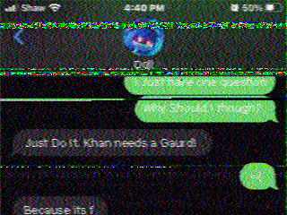
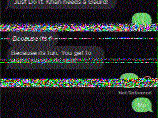
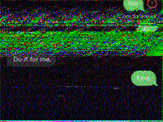
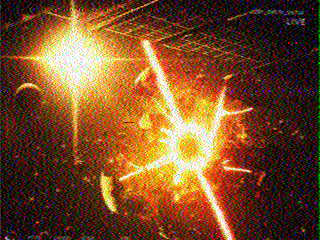

at the end of the introductory cutscene a string of morse code appers on screen which translates to "she controlls everything"
on the official youtube channel's community tab there is a piece of coded text that translates to:
done - logs now encoded
ready..
terminal loaded
exec command: mtools.exe
SWITCHING LOGGING TERMINUS TO MTOOLS.EXE
Welcome to Monitoring Tools v4.11.30
NOTICE: System date is incorrect (5/27/2036 >> ??/??/3072)
NOTICE: No endpoint available to require mm/dd of mm/dd/yyyy
Starting mtools >> mCam
Starting mtools >> mHub
mCam -- WARNING: Specified dat from mHub 3_02 may be corrupt
Starting date
[ok] cMarkHeader01.dat
[ok] cMarkHeader02.dat
[ok] cMarkHeader03.dat
[ok] cMarkDat01.dat
[ok] cMarkDat02.dat
[ok] cMarkDat03.dat
[ok] cMarkDat04.dat
[ FAILED ] cMarkDat05.dat
[ FAILED ] cMarkDat06.dat
ERROR: UNRECOGNIZED FORMAT - INITIATING FALLBACK
Preparing new data... OK
Clearing old date
[ erased ] cMarkHeader01.dat
[ erased ] cMarkHeader02.dat
[ erased ] cMarkHeader03.dat
[ erased ] cMarkDat01.dat
[ erased ] cMarkDat02.dat
[ erased ] cMarkDat03.dat
[ erased ] cMarkDat04.dat
[ FAILED ] cMarkDat05.dat
[ FAILED ] cMarkDat06.dat
CRITICAL ERROR: CANNOT ERASE DAT - DAT IN USE
dat Cleared!
Server shutdown via terminal
mtools.exe finished with return code 0
SWITCHING LOGGING TERMINUS TO SYSTERMINAL
sys -- captured msg to endpoint <ADMIN>: "it broke again"
sys -- captured endpoint <ADMIN> to msg: "use --inst /r /f /v 4.11.30 /0 /o MTOOLS"
exec command: --inst /r /f /v 4.11.30 /0 /o MTOOLS
cmd OUTPUT: This action requires reload of terminal. Continue?
exec command: y
terminal refresh
terminal loaded
exec command: mtools.exe
SWITCHING LOGGING TERMINUS TO MTOOLS.EXE
Welcome to Monitoring Tools v4.11.30
NOTICE: System date is incorrect (5/27/2036 >> ??/??/3072)
NOTICE: No endpoint available to require mm/dd of mm/dd/yyyy
Starting mtools >> mCam
Starting mtools >> mHub
mCam -- WARNING: Specified dat from mHub 3_02 is outdated
Upgrading date
[ upgraded ] cMarkHeader01.dat
[ upgraded ] cMarkHeader02.dat
[ upgraded ] cMarkHeader03.dat
[ upgraded ] cMarkDat01.dat
[ upgraded ] cMarkDat02.dat
[ upgraded ] cMarkDat03.dat
[ upgraded ] cMarkDat04.dat
[ upgraded ] cMarkDat05.dat
[ upgraded ] cMarkDat06.dat
[ upgraded ] cMarkDat07.dat
[ upgraded ] cMarkDat08.dat
[ upgraded ] cMarkDat09.dat
[ upgraded ] cMarkDat10.dat
[ upgraded ] cMarkDat11.dat
[ upgraded ] cMarkDat12.dat
date upgraded!
svr ready!
sys -- captured msg to endpoint <ADMIN>: "wtf"
sys -- captured msg to endpoint <ADMIN>: "why is this camera here"
sys -- captured endpoint <ADMIN> to msg: "what"
sys -- captured msg to endpoint <ADMIN>: "this camera is admin only, why is it he"
credit to TrexRobot for figuring out how to decode this shit
pressing CTRL + R while in the cameras brings up a terminal page allowing you to play 5 transmissions that can be
converted into images via sstv.
resulting in the following images



